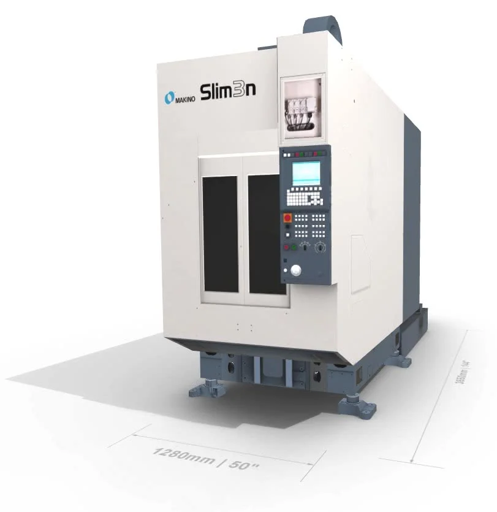
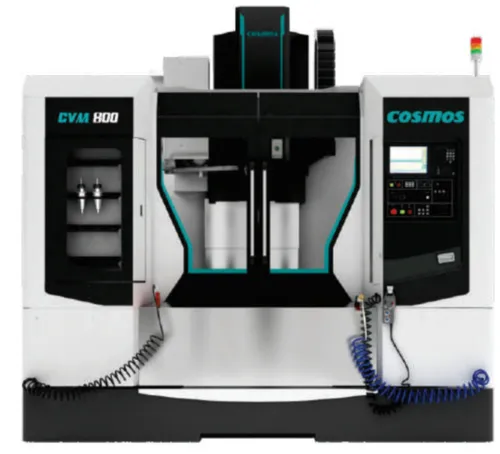
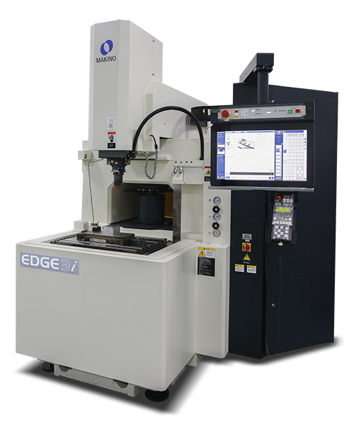
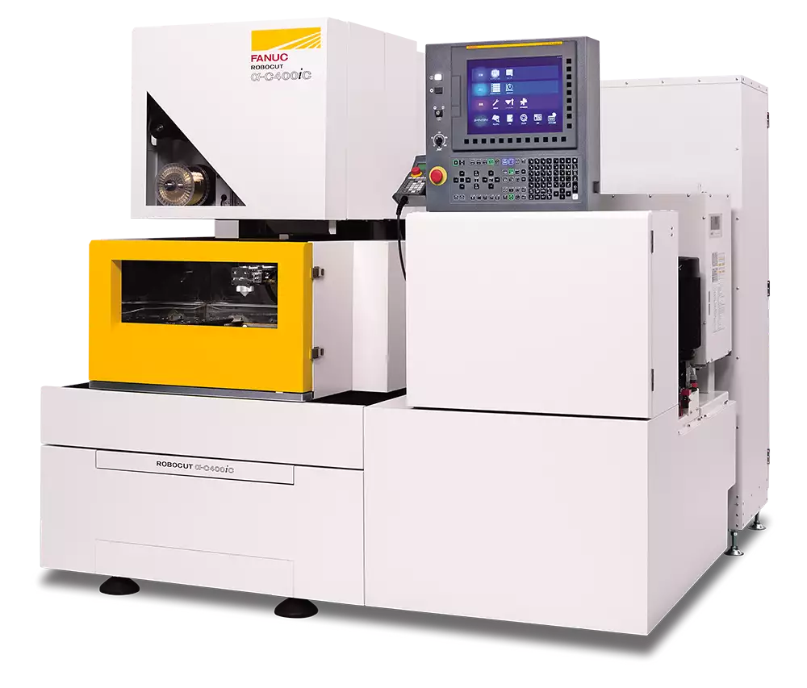
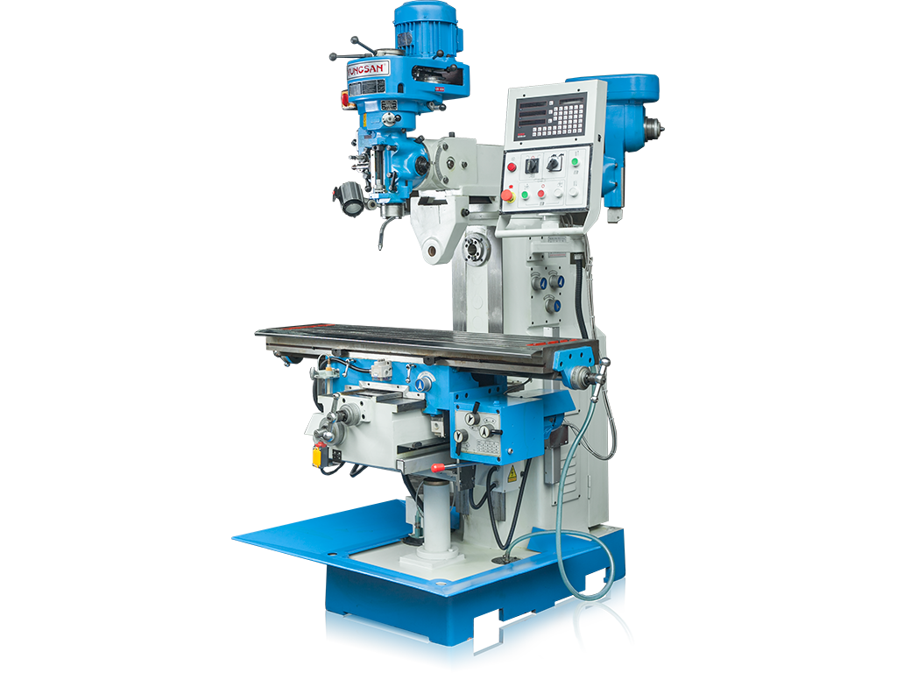
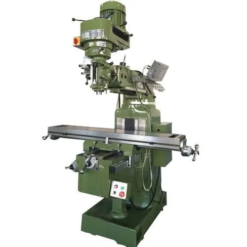
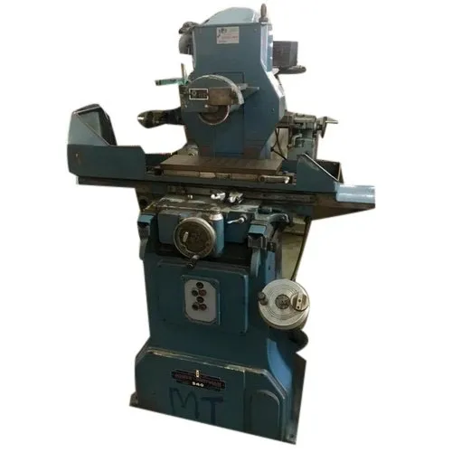
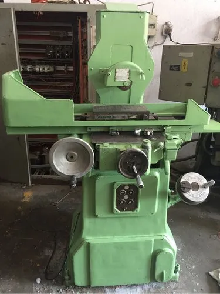
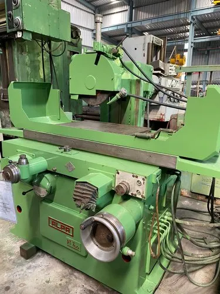

Facilities
Our commitment to quality extends beyond our team. We have invested in state-of-the-art facilities equipped with advanced CNC machinery and conventional tools to ensure precision and efficiency in every project.
Advanced Technology
At Pragathi Tools and Dies, we leverage cutting-edge CNC technology to deliver superior results. Here's a glimpse into some of our key equipment:
CNC Machining Centers

MAKINO Slim3n
This high-speed, 3-axis machining center offers exceptional accuracy and speed for complex mold and die components.

COSMOS Cvm800
Our 5-axis vertical machining center allows for intricate machining of contoured parts and features on multiple planes, minimizing setup times and maximizing efficiency.

MAKINO Edge 21
This versatile 3-axis machining center provides reliable performance for a wide range of machining tasks, ensuring consistent quality across all projects.
Wire EDM and EDM Drilling

SURE first edm
This wire EDM machine specializes in intricate details and tight tolerances, with a compact design and specialized wire threading for precise cutting of complex shapes on conductive materials, ideal for creating mold cores and cavities.

Fanuc WEDM
Fanuc's robust and versatile WEDM machines are great for high-speed cutting of larger workpieces and thicker materials. Automatic wire threading and in-path re-threading features ensure efficiency and minimal downtime, perfect for projects needing speed, precision, and handling larger components.
ZNC EDm drill
This EDM drilling machine allows for highly accurate and burr-free drilling of small holes on molds and dies, crucial for proper component function.
Conventional Expertise

Rough Mill
Our Rough Mill serves as the workhorse for initial material removal. This robust machine efficiently tackles large stock and quickly shapes raw materials into their preliminary forms, paving the way for more precise machining processes.

M1TR DRO
The M1TR DRO milling machine offers exceptional precision for various machining tasks. Equipped with a Digital ReadOut (DRO) system, this machine allows for accurate positioning and control over the cutting tool, ensuring consistent and repeatable results.

SG1
The SG1 milling machine provides a versatile solution for a wide range of projects. Its capabilities cater to various cutting operations, from simple milling tasks to more intricate machining requirements. This flexibility makes it a valuable asset in our workshop.

SG2
For projects requiring additional power and control, the SG2 milling machine steps up to the challenge. This machine tackles tougher materials and complex machining tasks with precision, ensuring exceptional results even for demanding applications.

SG3
The SG3 milling machine is known for its speed and efficiency. This machine excels at high-production environments where rapid material removal and precise shaping are crucial. Its ability to handle repetitive tasks with accuracy makes it a valuable asset for projects requiring a high volume of machined components.